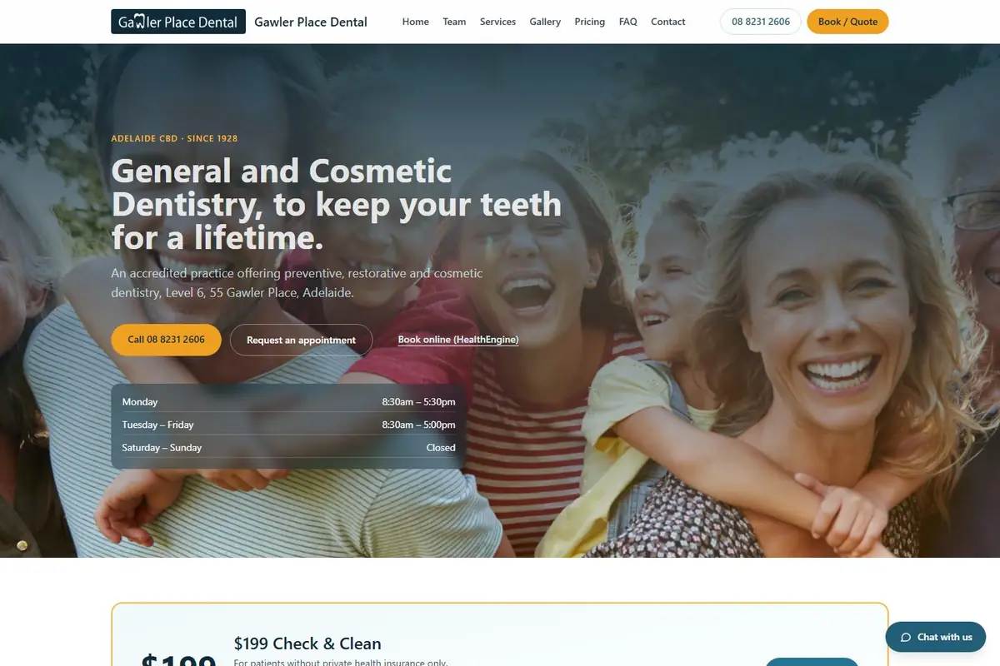

Website design · Dental practices · Australia · 2026
Dental Website Design in Australia: What a Practice Site Needs
Short answer: good dental website design in Australia comes down to three things. Make it easy to book, whether by phone, online or for urgent pain. Give each treatment its own clear page. And keep every claim, photo and review inside AHPRA's advertising rules, because those rules apply to your practice however the site was built. There's a demo build to explore below.
A patient looking for a dentist is usually doing one of two things: finding a practice for a check-up, or trying to get out of pain. Either way they're on a phone, comparing a few practices, and they leave the moment they can't work out how to book. For a dental practice website, that's the design brief. Pretty comes second to "can I get an appointment, and do I trust these people?". The pressure-washing guides on this site make the same point about trade websites; this checklist is the trades version.
Make booking obvious, on a phone first
Patients should never have to hunt for how to book. The usual pieces:
- A tap-to-call number in the header and again near the top of the page.
- A short online request or booking form. Name, contact details, what they need, and a preferred time. Fewer fields means fewer abandoned forms.
- A way to flag urgent pain, so those requests are seen first rather than sitting in a queue.
- Opening hours and location, visible without scrolling.
If your practice already uses online booking through its practice software or a booking platform, the website should link to it cleanly. The point of dental website online booking is that a patient can act at 9pm on the couch, not that the website replaces your front desk.
Give each treatment its own page
One long "Services" page makes it hard for patients to find what they're looking for and hard for Google to match a search such as "dental implants" to a specific answer. A page per treatment lets you explain what it is, who it suits, what to expect, and how to book, in plain words. Be wary of copy that over-promises: describe the treatment, not a guaranteed result.
The AHPRA advertising rules: what to check before you publish
This is the part most dental website guides skip past, and it's the part that can get a practice into trouble. In Australia, advertising a regulated health service is covered by the National Law, and the Dental Board and AHPRA publish guidelines on how it applies. A practice's website counts as advertising. Practitioners and the practice are responsible for it, even when an agency or freelancer wrote and built it.
In plain terms, the things to check on every page:
- Testimonials. Testimonials about a regulated health service can't be used in advertising. Reviews and social media have their own detailed guidance, so read it before you embed anything.
- Before-and-after images. They have rules about being genuine, not misleading, and not creating unrealistic expectations. Get the detail right or leave them off.
- Claims. Avoid unsubstantiated "best" or "leading" claims, anything that might create unrealistic expectations, and wording that encourages unnecessary treatment.
- Titles and specialties. Don't suggest specialist status that a practitioner doesn't hold.
- Offers and discounts. State terms and conditions clearly, and check the rules before advertising an inducement.
- Registration details. Show your team's real names, qualifications and registration details, and keep them current.
This is general information, not legal advice. Read the source material yourself: AHPRA's advertising hub and the Dental Board of Australia's codes and guidelines are the authority, and your professional association can help. I'm a web designer, not a regulator or a lawyer, so I build the site around the compliance checks you and your advisers give me.
Trust that stays inside the rules
Without testimonials, trust comes from facts a patient can check. Show who the dentists and hygienists are, with real qualifications and registration details. Show accreditation if the practice holds it. Spell out health fund arrangements, payment options and how fees are explained before treatment starts. Use real photos of the real clinic and team, not generic stock. Answer the questions patients actually ask in a proper FAQ: first visits, children, anxiety, what a check-up includes, how to book in an emergency.
See it working: the Gawler Place Dental demo build
Demo build — fictional business
I built Gawler Place Dental, an Adelaide CBD practice site, to show what the pieces above look like together. It is not a real practice and not a client: the name, team, offers and details are made up. It stays out of Google's index on purpose.

Things to look at when you open it:
- The booking paths. A phone number, an appointment request form with an urgent-pain option, and a link out to an online booking platform.
- Treatment pages and services. How a range of treatments is laid out so patients can find what they need.
- The FAQ and cost-guide approach. The demo explains how costs are confirmed without printing figures.
- Service areas and hours. The local details a patient checks before they book.
A fair warning: the demo is a design showcase. It hasn't been through an AHPRA compliance review, and some of its content, such as team registration details, is placeholder. Don't treat it as a compliance template. A real build would be checked against the guidelines above, with your own content, before it went live.
Open the Gawler Place Dental demo
What a website won't do
- It won't replace your front desk. Requests still need someone to confirm times, and urgent cases need a fast response. Plan who watches the inbox.
- It won't fix reputation. Google reviews and the Google Business Profile matter alongside the site, and the review rules above still apply.
- It won't make you compliant by itself. Compliance is a review of your own content, by you and your advisers.
If an enquiry goes unanswered, the next practice gets the patient. My missed call text back guide covers one way to reply fast, including the Spam Act rules for texting people who've contacted you. For what the follow-up software costs to run, see GoHighLevel pricing Australia.
Questions dental practices ask about their website
What should a dental website include?
A booking path that works on a phone (call, online request, and a way to flag urgent pain); one page per treatment; your team's registration details and qualifications; hours, location and how to pay, including health funds; honest answers to the questions patients ask; and fast, mobile-friendly pages. All of it has to sit within AHPRA's advertising rules.
Can a dental website show patient testimonials?
Not in advertising. Under the National Law, testimonials about a regulated health service can't be used in advertising, and a practice's website counts. Rules on reviews and on before-and-after images are more detailed, so check AHPRA's advertising guidance and the Dental Board's guidelines, or ask your professional association. General information, not legal advice.
Is the practice responsible if an agency builds the website?
Yes. AHPRA's guidance is that advertising compliance is the responsibility of the practitioner or practice, even when someone else wrote or built it. So review every page yourself, and don't assume a designer has checked it against the rules. General information, not legal advice.
Is Gawler Place Dental a real practice?
No. Gawler Place Dental is a demo build of a fictional business, made to show what a dental practice site can look like. It isn't a client, and it hasn't been through a compliance review.
How much does a dental website cost?
I haven't published a dental website price. It depends on how many treatment pages you need, how booking works with your practice software, and what content you already have, so I scope it on a free funnel website audit call rather than guess a number here.
Want a dental practice site like the demo?
I build booking-first websites for Australian service businesses, with follow-up behind the form. Book a free funnel website audit and we'll go through what your current site is missing and what a dental build would involve.
Book a Free Funnel Website AuditPaul Isogon · I run this system on my family's pressure cleaning business in Albury–Wodonga. Gawler Place Dental is a demo build of a fictional business, not a client.